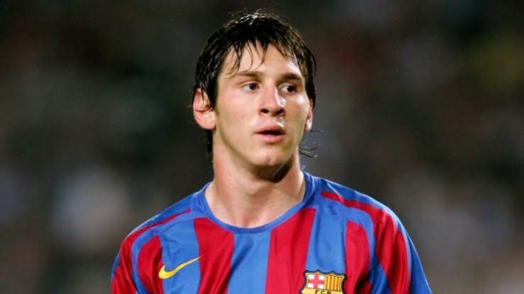
FIFA U-20 World Cup champion
Led Argentina to the U-20 world title and won both the Golden Ball and the Golden Boot.
Ejims TV's hall of fame for the greatest of all time. Dr. Messi leads the way, with Steph Curry right behind him.
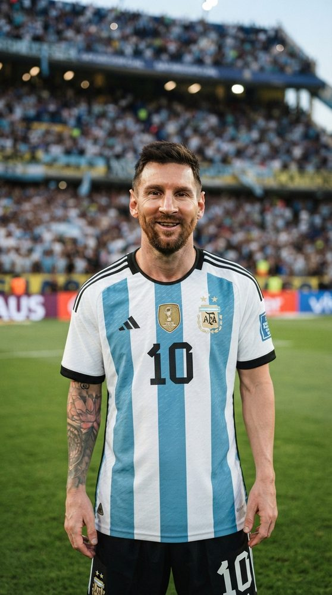
🇦🇷 Argentina · No. 10Lionel Andrés Messi was born on 24 June 1987 in Rosario, Argentina. As a child he was diagnosed with a growth hormone deficiency, and at 13 he moved to Spain when FC Barcelona agreed to pay for his treatment.
He made his Barcelona debut at 17 and spent 17 seasons there, becoming the club's greatest ever player. He later played for Paris Saint-Germain and joined Inter Miami in 2023. With Argentina he won the 2022 World Cup and two Copa Américas, and he has won more trophies than any footballer in history.

Led Argentina to the U-20 world title and won both the Golden Ball and the Golden Boot.
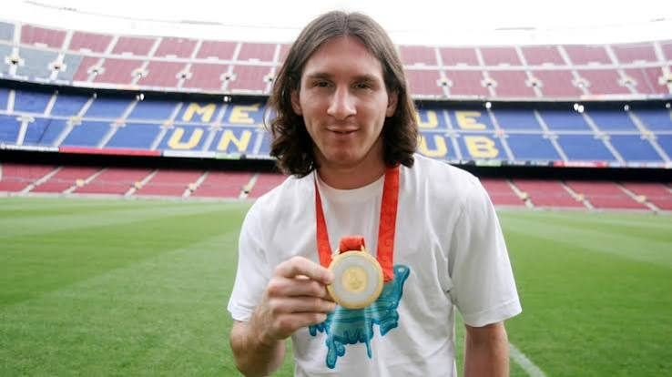
Won Olympic gold with Argentina at Beijing 2008, setting up the winner in the final against Nigeria.
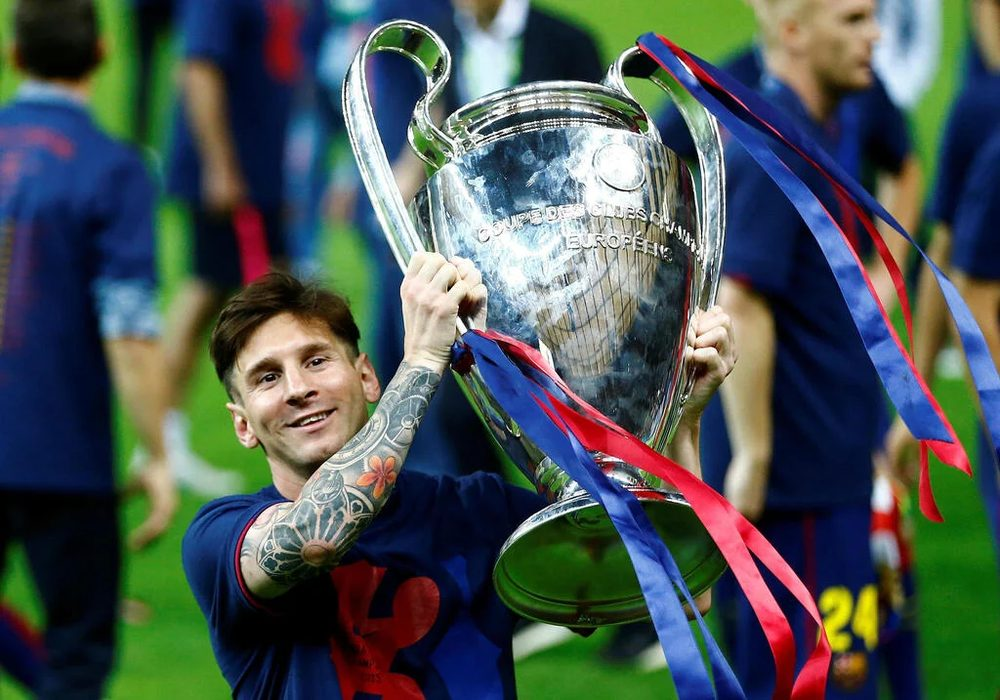
Won Europe's biggest club trophy in 2006, 2009, 2011 and 2015, scoring in the 2009 and 2011 finals.
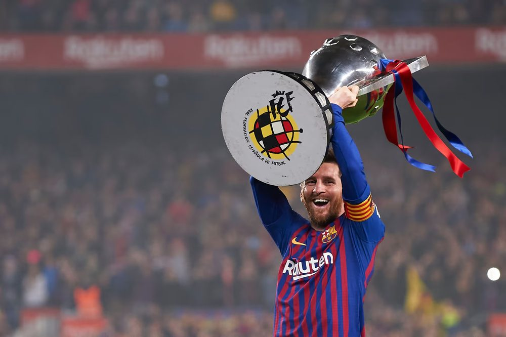
Ten Spanish league titles and seven Copas del Rey, making him Barcelona's most decorated player.
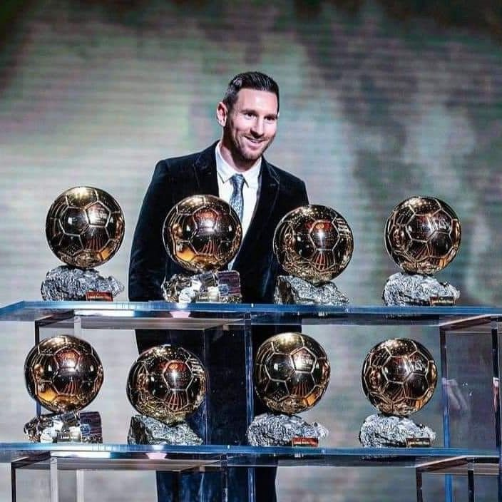
Won the Ballon d'Or in 2009, 2010, 2011, 2012, 2015, 2019, 2021 and 2023. Nobody else has more than five.
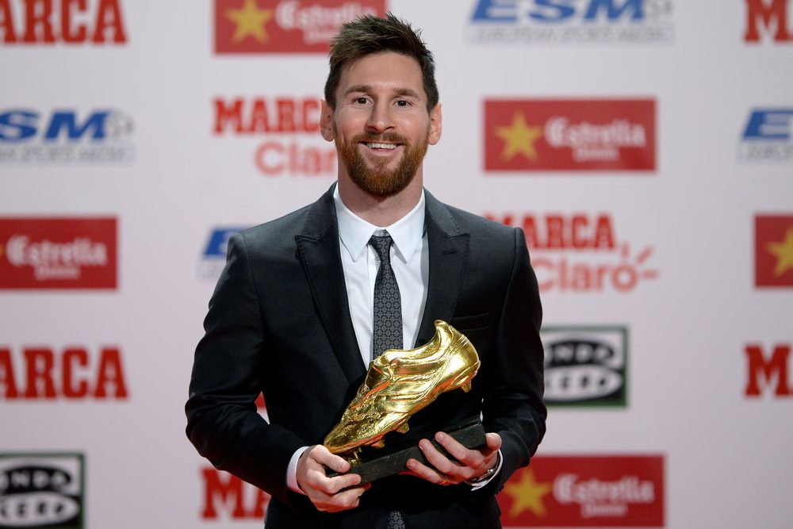
Finished as Europe's top league scorer a record six times.
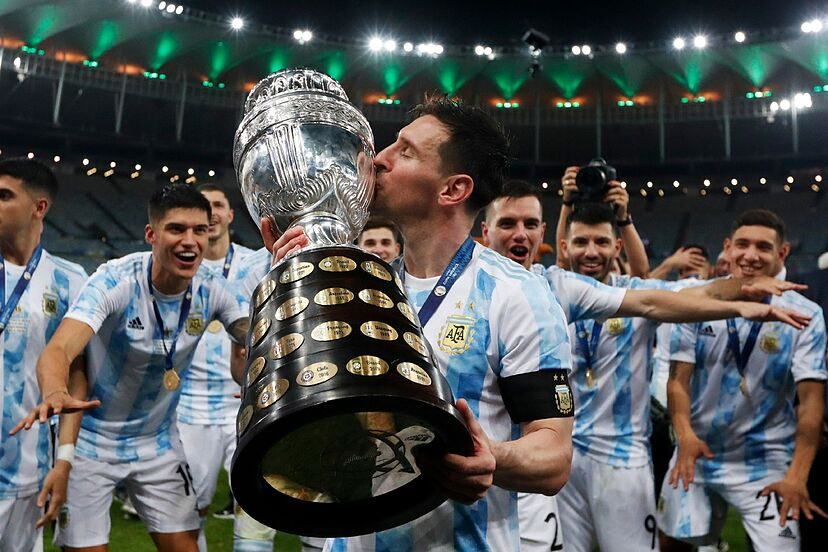
Ended Argentina's 28-year wait for a major trophy by beating Brazil at the Maracanã, and was named best player and top scorer.
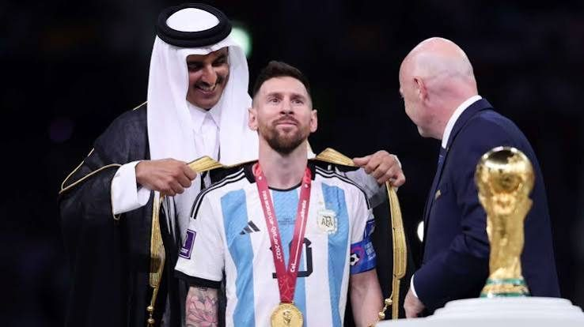
Captained Argentina to the World Cup in Qatar, scoring twice in the final against France.
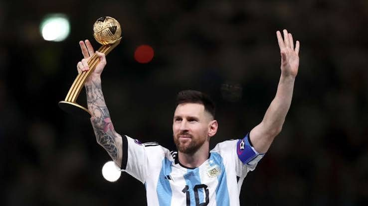
The only player to win the World Cup's best-player award twice, and the record holder for World Cup appearances.
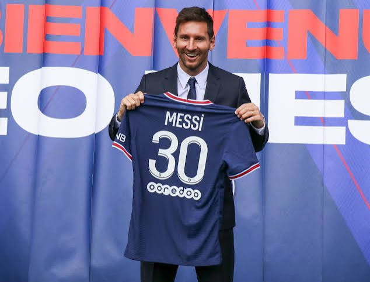
Won back-to-back French league titles with Paris Saint-Germain.
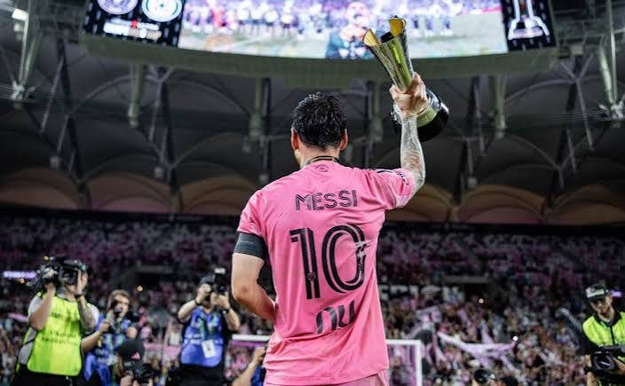
Delivered Inter Miami's first-ever trophy weeks after arriving, as top scorer and best player.
Part of the first team to win six trophies in one year: La Liga, Copa del Rey, Champions League, Supercopa, UEFA Super Cup and Club World Cup.
Scored 91 official goals in 2012 for club and country, a Guinness World Record.
672 goals for Barcelona and 474 in La Liga, both all-time records.
Beat Italy 3–0 at Wembley in the meeting of the South American and European champions.
Won a second straight Copa América, becoming the most decorated player in football history.
Won the 2024 Supporters' Shield and became the first player to win MLS MVP in back-to-back seasons.
Led Inter Miami to their first MLS Cup title in December 2025.
Named FIFA's best men's player in 2019, 2022 and 2023, and Laureus Sportsman of the Year in 2020 and 2023.
Argentina's all-time top scorer and most-capped player, and a record six-time World Cup player.
Received a Doctor Honoris Causa from the University of Buenos Aires on 6 October 2026, for his excellence, perseverance and humility, and his charity work.
Received one of Spain's most prestigious awards from Princess Leonor in Oviedo on 24 October 2026, with King Felipe VI and Queen Letizia in attendance.
Named a recipient of the United States' highest civilian honour.
Has supported UNICEF's work for children around the world since 2010.
Founded his own charity, which funds healthcare and education for vulnerable children.
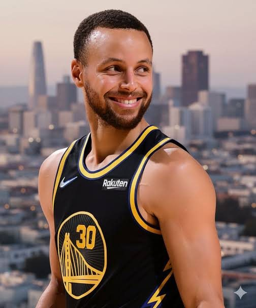
🇺🇸 Golden State · No. 30Wardell Stephen Curry II was born on 14 March 1988 in Akron, Ohio, and grew up in Charlotte, the son of NBA player Dell Curry. Big colleges overlooked him for being too small, so he went to Davidson College, where his shooting made him a star.
The Golden State Warriors drafted him seventh overall in 2009, and he has played his whole career there. Curry changed how basketball is played: his long-range shooting made the three-pointer the game's main weapon. He has four NBA titles, two MVP awards and an Olympic gold medal.
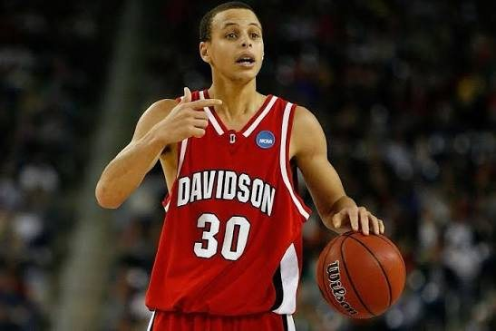
Took tiny Davidson College to the NCAA Elite Eight and became a national story overnight.
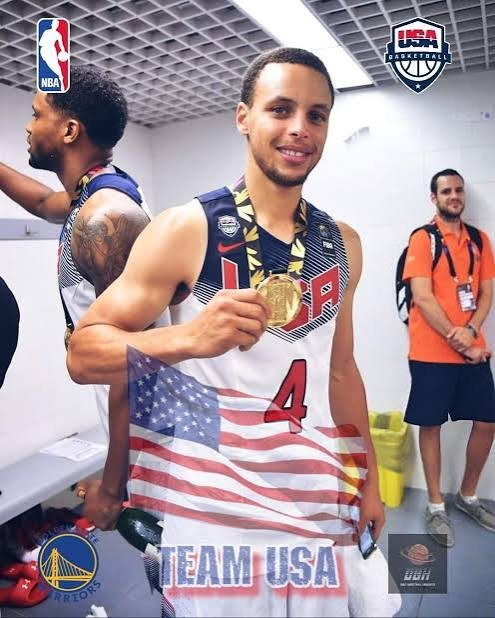
Won the Basketball World Cup with Team USA in 2010 and again in 2014.
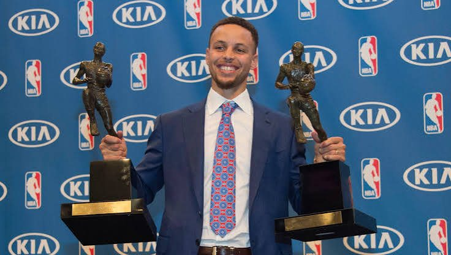
Won MVP in 2015 and 2016. The second was the first unanimous MVP in NBA history, after a record 402 threes and a 73-win season.
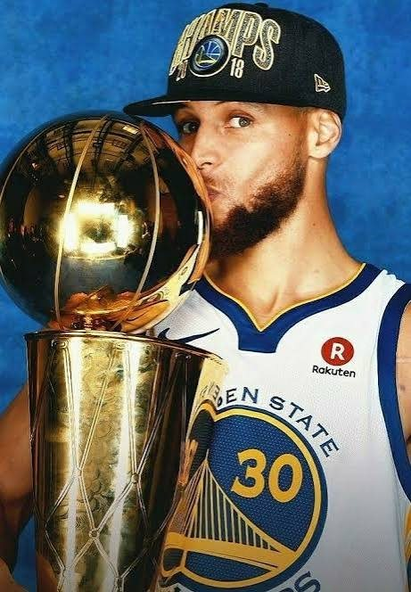
Won NBA titles in 2015, 2017, 2018 and 2022, the first ending a 40-year wait for Golden State.
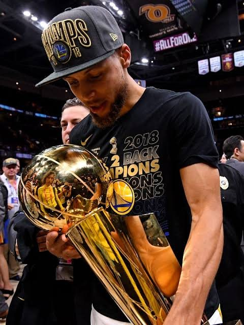
Won two titles in a row to make it three championships in four years.
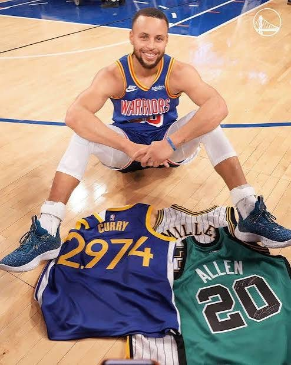
Passed Ray Allen's record of 2,973 threes to become the NBA's all-time leader in three-pointers made.
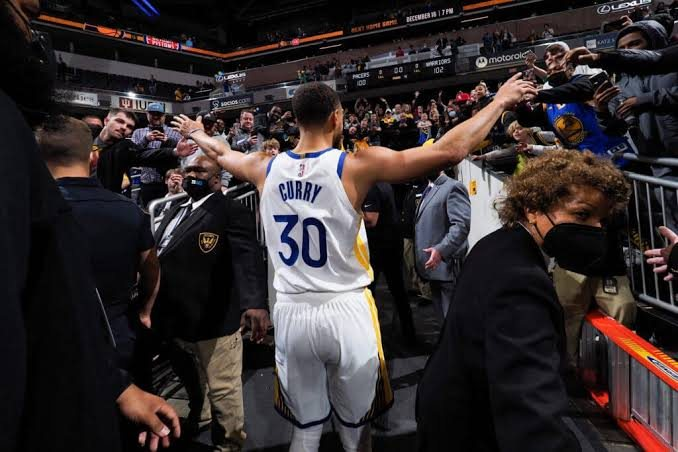
Saluted a standing crowd at Madison Square Garden on the night he broke the record.
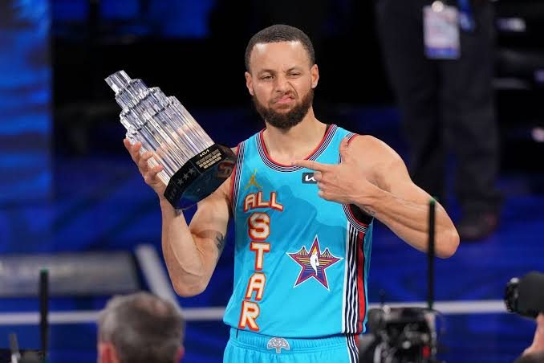
Won All-Star MVP with a record 16 three-pointers in a single All-Star Game.
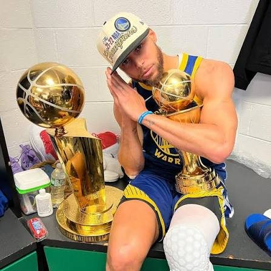
Won his fourth championship and his first Finals MVP, plus the first Western Conference Finals MVP.
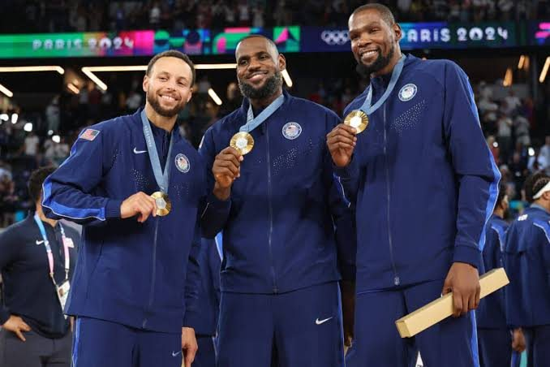
Hit four late threes against France in the gold medal game to win Olympic gold with Team USA.
Became the first player in NBA history to make 4,000 career three-pointers.
Led the league in scoring in 2015–16 and 2020–21.
Picked as an NBA All-Star more than ten times.
Named the NBA's Clutch Player of the Year for the 2023–24 season.